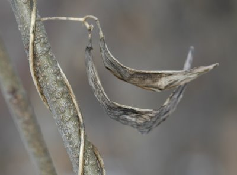
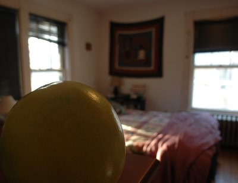
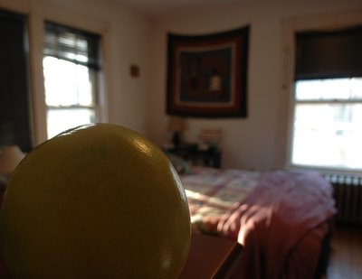

Saturday, December 31, 2005
|Wednesday, December 28, 2005
Some Tethers & An Heroic Couplet
I decided to go to Rock Meadow, a piece of conservation land in the neighboring town. I was drawn to the simplicity of the name. Rock. Meadow. Nothing more. No sponsor, no in memoriam. It's elemental, barely human, amenable to being rendered as glyph, as spare and essential as winter itself. Nothing flowery about it.
The day was cold, bright and windy. I picked my way along the rutted, icy path, flinching against the wind. Halfway up a frigid slope -- hard snow with sharp, mown grass knifing through -- I rethought my course. Behind me, sheltered in a small hollow, was the community garden, a shantytown patchwork of little fenced-off plots through which ran a gridwork of paths. I would go in there.
A beautiful lavender gate welcomed me. I had to recalibrate. This was a human habitat, albeit deserted. Human spoor was everywhere: pails, wire, stakes, overturned wheebarrows, chairs. Some of the plots were completely overgrown with weeds; others were littered with untidy strands of what had been grown there; still others had been neatly groomed and put to winter bed. A flag fluttered over one; a furled, striped umbrella stood at the edge of the woods, improbably blue and summery.
I squatted and refocused. I was camerawoman, after all, here to take pictures of weeds, my favorite, perhaps my only subject. I searched until I found another gate, a rusty one, guarded by a frayed nylon rope and a denuded nightshade twig. I ducked under it and looked around.
Follow me, said the snake.
Almost there, said the vetch.
Do not fall, said the urn.
Hold on tight, said the hands.
Hook right up, said the stem.

Rest it here, said the head.
On the rust, said her friend.
Bag of skin, sighed the fruit, you've arrived --
look right there --
precious chair !
I laughed. Precious chair, French for flesh, and elaborate tethers that cost far more than what they bind. Human spoor indeed, significant spoor, spoor more complex than rock and meadow, spoor that cries Mine ! Me !
I wound my way through the narrow paths between the plots. I knew about tethers. The act of taking pictures, of looking, even, was fraught with them.
I love this. But what if my camera breaks ? What if I go blind, or if my legs fail ? What will I do then ?
The thought brings me back to the here and now of eye and weed, eye and viewfinder. This is what is. This is rock, this is meadow. These are the knees that can still squat, the neck that, with a small creak, can still crank around to better frame a tiny, tufted seed.
There is nothing outside this moment, outside this cultivated hollow.
Wind, wolves, hip-and-lens fracturing ice, death itself -- no more (or less) than elusive eidolons fluttering though the improbable complex of photographer-and-garden.
Surrounded by rust and rot, I breathe; my blood's iron oxidizes. Cells switch on and off amidst ratcheting actin and mysosin, flickering synapses, gushing follicles. Secret conspiracies underway everywhere.
There is cold; there is interest; there is pleasure. There is the avid eye. There is anxiety, need, regret, longing, planning, cheek-stinging wind, birdsong, and the smell of decay. Hungry now. Maybe some lunch ?
Yes, that would be nice. Some oatmeal, maybe. With raisins. A cup of coffee. And a final couplet to latch behind me like a garden gate:
O heart, propel your iron through this prayer,
and bell until you rust clear through to air !
The day was cold, bright and windy. I picked my way along the rutted, icy path, flinching against the wind. Halfway up a frigid slope -- hard snow with sharp, mown grass knifing through -- I rethought my course. Behind me, sheltered in a small hollow, was the community garden, a shantytown patchwork of little fenced-off plots through which ran a gridwork of paths. I would go in there.
A beautiful lavender gate welcomed me. I had to recalibrate. This was a human habitat, albeit deserted. Human spoor was everywhere: pails, wire, stakes, overturned wheebarrows, chairs. Some of the plots were completely overgrown with weeds; others were littered with untidy strands of what had been grown there; still others had been neatly groomed and put to winter bed. A flag fluttered over one; a furled, striped umbrella stood at the edge of the woods, improbably blue and summery.
I squatted and refocused. I was camerawoman, after all, here to take pictures of weeds, my favorite, perhaps my only subject. I searched until I found another gate, a rusty one, guarded by a frayed nylon rope and a denuded nightshade twig. I ducked under it and looked around.
Follow me, said the snake.
Almost there, said the vetch.
Do not fall, said the urn.
Hold on tight, said the hands.
Hook right up, said the stem.

Rest it here, said the head.
On the rust, said her friend.
Bag of skin, sighed the fruit, you've arrived --
look right there --
precious chair !
I laughed. Precious chair, French for flesh, and elaborate tethers that cost far more than what they bind. Human spoor indeed, significant spoor, spoor more complex than rock and meadow, spoor that cries Mine ! Me !
I wound my way through the narrow paths between the plots. I knew about tethers. The act of taking pictures, of looking, even, was fraught with them.
I love this. But what if my camera breaks ? What if I go blind, or if my legs fail ? What will I do then ?
The thought brings me back to the here and now of eye and weed, eye and viewfinder. This is what is. This is rock, this is meadow. These are the knees that can still squat, the neck that, with a small creak, can still crank around to better frame a tiny, tufted seed.
There is nothing outside this moment, outside this cultivated hollow.
Wind, wolves, hip-and-lens fracturing ice, death itself -- no more (or less) than elusive eidolons fluttering though the improbable complex of photographer-and-garden.
Surrounded by rust and rot, I breathe; my blood's iron oxidizes. Cells switch on and off amidst ratcheting actin and mysosin, flickering synapses, gushing follicles. Secret conspiracies underway everywhere.
There is cold; there is interest; there is pleasure. There is the avid eye. There is anxiety, need, regret, longing, planning, cheek-stinging wind, birdsong, and the smell of decay. Hungry now. Maybe some lunch ?
Yes, that would be nice. Some oatmeal, maybe. With raisins. A cup of coffee. And a final couplet to latch behind me like a garden gate:
O heart, propel your iron through this prayer,
and bell until you rust clear through to air !
Monday, December 26, 2005
Uberhaus
How could I have failed to note here that our over-coiffed, flip-flopping wingnut of a republican governator, Willard "the Mitthead" Romney has announced that he will decline to run for a second term and will spend the next several years pondering the possibility of running (ie. campaiging furiously) for president.
He's been busy gadding about the country badmouthing Massachusetts at each possible turn. "I feel," he once sniffed to gales of beefy, Republican laughter, "like a cattle rancher at a vegetarian convention." And he has been doling out reciprocal admiration to his fellow Republicans for their own attempts at political stand-up comedy. Viz., this bit of political whimsy served up at a recent Federalist Society soiree --
"Today, when most of the country thinks of who controls Massachusetts, I think the modern-day KKK comes to mind, the Kennedy-Kerry Klan," Walpin, who sits on the society's board of visitors, said to hearty laughter. "One person who has been victorious against that tide in Massachusetts is Massachusetts Governor Mitt Romney."
Romney, along with members of the audience, laughed at the joke and later thanked Walpin for the "very generous introduction."
That is until the furious backpedaling set in:
...later in the day, as Democrats got wind of Walpin's remark and began circulating it, Romney distanced himself from the joke and said it was wrong.
He's not the only member of our current executive branch that has difficulty keeping the elitist "let them eat week old remaindered Wonder Bread" arrogance under wraps. It has been rumored that his sidekick, Lieutenant Governator Kerry (not to be confused with John Kerry of kkk fame) Healey, is being groomed to run for the office he will vacate. Vacate, I might add, after a single term when he'd assured his supporters he'd be around for two. I suppose that's a better track record than the last two Republican Governators, both of whom grew bored with Governating and quit mid term, one to write mystery novels, the other to attempt to incite a war with Canada.
Groomed for office I say ? It's hard to imagine that Ms. Healey could be any more groomed: she is willowy, impeccably dressed, blond and nearly as well-coiffed as the Mitthead. Standing side by side they evoke nothing less than Barbie and Ken.
As I read in this morning's Globe that the Healeys have just successfully fought a $7000 increase in property taxes on their Vermont vacation property, I had ample chance to reflect on Ms. Healey's past policy statements on the topic of property taxation. Senior citizens, she declared, who, because of skyrocketing assessments, find that their property taxes have become prohibitively high, should not be offered tax abatements.
That would simply perpetuate the terrible situation of overhousing -- doddering crones and codgers greedily wanting to live out their golden years in the houses where they've lived for decades. Hogging, as it were, three and four bedroom empty nests that could otherwise go to young, affluent suburban couples with their clever, well-groomed children.
These overhoused oldsters should do the only decent thing and move out, she declared. Freeing up plum housing for people like, well, herself.
And why have property assessments spiralled out of control ? Why, for example, is the house we bought in 1997 "worth" twice as much now as it was then ?
(Believe me, it's not because of any massive home improvement projects we've undertaken. Viz. the several lawns that have failed, and the six hemlock trees that died a grisly death along the backyard fence.)
Could it be because of people who view a house as a speculative commodity, and not a dwelling ? People who buy up modest lots, demolish the modest houses on them, and erect bloated, tacky, overpriced McMansions in their place ? People like, oh, Ms. Healy ?
And what, you might ask, is Ms. Healey's own housing situation ? I'm SO glad you asked. Again, the Boston Globe: : "When their enormous $2 million vacation home is finished in West Windsor, Vt., Kerry Healey and her husband, Sean M. Healey, will own five houses, worth about $9 million total, in three states: the new house and an existing nine-room home on 134 acres in Vermont; a 12-room house, assessed at $1.1 million, at the Palm Island resort in Cape Haze on the West Coast of Florida; and a pair of adjacent ocean-front homes on Curtis Point in Beverly, part of the North Shore's ''gold coast.'"
One might accuse Ms. Healey of being many things.
But one of those things is not underhoused.
He's been busy gadding about the country badmouthing Massachusetts at each possible turn. "I feel," he once sniffed to gales of beefy, Republican laughter, "like a cattle rancher at a vegetarian convention." And he has been doling out reciprocal admiration to his fellow Republicans for their own attempts at political stand-up comedy. Viz., this bit of political whimsy served up at a recent Federalist Society soiree --
"Today, when most of the country thinks of who controls Massachusetts, I think the modern-day KKK comes to mind, the Kennedy-Kerry Klan," Walpin, who sits on the society's board of visitors, said to hearty laughter. "One person who has been victorious against that tide in Massachusetts is Massachusetts Governor Mitt Romney."
Romney, along with members of the audience, laughed at the joke and later thanked Walpin for the "very generous introduction."
That is until the furious backpedaling set in:
...later in the day, as Democrats got wind of Walpin's remark and began circulating it, Romney distanced himself from the joke and said it was wrong.
He's not the only member of our current executive branch that has difficulty keeping the elitist "let them eat week old remaindered Wonder Bread" arrogance under wraps. It has been rumored that his sidekick, Lieutenant Governator Kerry (not to be confused with John Kerry of kkk fame) Healey, is being groomed to run for the office he will vacate. Vacate, I might add, after a single term when he'd assured his supporters he'd be around for two. I suppose that's a better track record than the last two Republican Governators, both of whom grew bored with Governating and quit mid term, one to write mystery novels, the other to attempt to incite a war with Canada.
Groomed for office I say ? It's hard to imagine that Ms. Healey could be any more groomed: she is willowy, impeccably dressed, blond and nearly as well-coiffed as the Mitthead. Standing side by side they evoke nothing less than Barbie and Ken.
As I read in this morning's Globe that the Healeys have just successfully fought a $7000 increase in property taxes on their Vermont vacation property, I had ample chance to reflect on Ms. Healey's past policy statements on the topic of property taxation. Senior citizens, she declared, who, because of skyrocketing assessments, find that their property taxes have become prohibitively high, should not be offered tax abatements.
That would simply perpetuate the terrible situation of overhousing -- doddering crones and codgers greedily wanting to live out their golden years in the houses where they've lived for decades. Hogging, as it were, three and four bedroom empty nests that could otherwise go to young, affluent suburban couples with their clever, well-groomed children.
These overhoused oldsters should do the only decent thing and move out, she declared. Freeing up plum housing for people like, well, herself.
And why have property assessments spiralled out of control ? Why, for example, is the house we bought in 1997 "worth" twice as much now as it was then ?
(Believe me, it's not because of any massive home improvement projects we've undertaken. Viz. the several lawns that have failed, and the six hemlock trees that died a grisly death along the backyard fence.)
Could it be because of people who view a house as a speculative commodity, and not a dwelling ? People who buy up modest lots, demolish the modest houses on them, and erect bloated, tacky, overpriced McMansions in their place ? People like, oh, Ms. Healy ?
And what, you might ask, is Ms. Healey's own housing situation ? I'm SO glad you asked. Again, the Boston Globe: : "When their enormous $2 million vacation home is finished in West Windsor, Vt., Kerry Healey and her husband, Sean M. Healey, will own five houses, worth about $9 million total, in three states: the new house and an existing nine-room home on 134 acres in Vermont; a 12-room house, assessed at $1.1 million, at the Palm Island resort in Cape Haze on the West Coast of Florida; and a pair of adjacent ocean-front homes on Curtis Point in Beverly, part of the North Shore's ''gold coast.'"
One might accuse Ms. Healey of being many things.
But one of those things is not underhoused.
Sunday, December 25, 2005
| |Saturday, December 24, 2005
|Friday, December 23, 2005
Enthuse This
Each year, at winter solstice, I hold my breath. Will this be the year in which I lean too far out into the dark ? Will the tethers give and let me plunge into the open mawed fall frightful of absolute dark and absolute cold ?
The sun noodles away at a great distance. Gravity and light dwindle. In the impending dark, activity continues:
Desquamation.
Exsanguination.
Dessication.
Attenuation.
Ora pro nobis.
Raw, bloodless, dry and gaunt, I look for comfort midair.

My reach falls short. My fingers fail.
But something at the last minute catches me, and holds me fast.
Surround, I pray. And ground.
Friday, December 16, 2005
Pummelo
Friday L. arrived at work with this. It was for me.
It's a Pummelo, she explained. Like a grapefruit, except thicker skinned and sweeter.
I took the curious fruit from her and held it in both hands. It was enormous, yellow, heavy and cool, the size of a baby's head. My hands fit it exactly. I parked the thing on my desk and between patients I returned to it, hoisted it, tossed it hand to hand, even caressed it. It cried out to be touched; I lifted it to my nose, closed my eyes and breathed. A faint redolence of grapefruit raised a ghost of Proustian childhood breakfasts. I put it down and percussed it, as if it were a patient's chest: it was strangely resonant.
I was falling in love.
At day's end I slipped it into my backpack and brought it home.
What was so compelling, so attractive about the pummelo ? You would think it and I would be a bad match, nearly incompatible. I am a damp and darkling creature of the North, it a sunny denizen of the hot, dry southwest. Wouldn't some sour and gnarly apple be more my type, some creature of a long-abandoned orchard, clinging to its branch long into November ?
Noting my adoration of the pummelo, several people advised You should draw a face on it.
They didn't get it. The pummelo is far from faceless.
It has a dark side -- a side blotched with lime-green quasi-lunar shadows.
And, in addition to its green moon blotch, it's got a crater,
and, opposite, amidst a sea of pellucid snot-green speckles, an omphalos.
I was in its sway, and it knew it. So it took over the house.
It claimed the best radiator, and the best view.
It had a torrid fling with a ceramic pot, right beneath my eyes.
It developed literary pretensions: I am, it declaimed, a jar in Tennessee.
It affected a passion for tea,
pronounced our French doors "inauthentic"
and our kitchen penguin "tacky, and not in a good way."

It became a spy in the house of love,
and tried to outdo camerawoman
and bicycleman at their avocations.
Finally, when it grew sloppily lachrymose beside the dead pet's ashes, I'd had enough.
There would be breakfast and I held all the spoons.
It's a Pummelo, she explained. Like a grapefruit, except thicker skinned and sweeter.
I took the curious fruit from her and held it in both hands. It was enormous, yellow, heavy and cool, the size of a baby's head. My hands fit it exactly. I parked the thing on my desk and between patients I returned to it, hoisted it, tossed it hand to hand, even caressed it. It cried out to be touched; I lifted it to my nose, closed my eyes and breathed. A faint redolence of grapefruit raised a ghost of Proustian childhood breakfasts. I put it down and percussed it, as if it were a patient's chest: it was strangely resonant.
I was falling in love.
At day's end I slipped it into my backpack and brought it home.
What was so compelling, so attractive about the pummelo ? You would think it and I would be a bad match, nearly incompatible. I am a damp and darkling creature of the North, it a sunny denizen of the hot, dry southwest. Wouldn't some sour and gnarly apple be more my type, some creature of a long-abandoned orchard, clinging to its branch long into November ?
Noting my adoration of the pummelo, several people advised You should draw a face on it.
They didn't get it. The pummelo is far from faceless.
It has a dark side -- a side blotched with lime-green quasi-lunar shadows.
And, in addition to its green moon blotch, it's got a crater,
and, opposite, amidst a sea of pellucid snot-green speckles, an omphalos.
I was in its sway, and it knew it. So it took over the house.
It claimed the best radiator, and the best view.
It had a torrid fling with a ceramic pot, right beneath my eyes.
It developed literary pretensions: I am, it declaimed, a jar in Tennessee.
It affected a passion for tea,
pronounced our French doors "inauthentic"
and our kitchen penguin "tacky, and not in a good way."

It became a spy in the house of love,
and tried to outdo camerawoman
and bicycleman at their avocations.
Finally, when it grew sloppily lachrymose beside the dead pet's ashes, I'd had enough.
There would be breakfast and I held all the spoons.
Tuesday, December 13, 2005
|Monday, December 12, 2005
Lux
In my dream I was swimming effortlessly downriver in thick, still, warm, black water. I've had water dreams all my life, most of them nightmares, but this was different. There was no fear, no dread of drowning, no anxiety about what awful dream thing lay ahead.
The river terminated in a small, dim, brick, chapel-like building, somewhat like a boathouse. Again, in the dream twilight, usually so pregnant with menace, there was no fear. And when, aground and lost, I had to ask the beautiful, blond carnival ticket-taker how to get back to the river, she, though fierce and imperious, said she would lead me back there herself.
The dream river was opaque. The river dream was opaque. They were bottomless. With what eyes do we see, do we see in dreams ? No eyes, in fact. No light, no lenses. Just flesh and flux; anions, cations. But eyes were involved, once. Lenses, light. The sun. The big bang. The flash of lux. The dream is like a book. An embellished history, revisionist to the max. There's a pudgy six year old with pincurls and bangs in my head. I wish she'd leave.
I went out walking yesterday in snowlight. I had to recalibrate. The landscape, the lightscape had all changed. My eyes hurt. Tears welled, crocodile tears, from sheer bio mechanics. I could feel my irises stopping down to pinpoint. I saw lenses everywhere.
The brain is a lens. A big blood lens.
It's full of holes, and sometime photosynthesizes. It makes its own light and its own darkness.
There was thin glass
and thick glass
and thick and thin glass.
There even was wet glass.
And glass, as in Man, look at that dude's GLASS !
Pssst. Try handholding that monster stopped down to f/25 at a shutter speed of 1/25. I hear it works wonders with seagulls !
The river terminated in a small, dim, brick, chapel-like building, somewhat like a boathouse. Again, in the dream twilight, usually so pregnant with menace, there was no fear. And when, aground and lost, I had to ask the beautiful, blond carnival ticket-taker how to get back to the river, she, though fierce and imperious, said she would lead me back there herself.
The dream river was opaque. The river dream was opaque. They were bottomless. With what eyes do we see, do we see in dreams ? No eyes, in fact. No light, no lenses. Just flesh and flux; anions, cations. But eyes were involved, once. Lenses, light. The sun. The big bang. The flash of lux. The dream is like a book. An embellished history, revisionist to the max. There's a pudgy six year old with pincurls and bangs in my head. I wish she'd leave.
I went out walking yesterday in snowlight. I had to recalibrate. The landscape, the lightscape had all changed. My eyes hurt. Tears welled, crocodile tears, from sheer bio mechanics. I could feel my irises stopping down to pinpoint. I saw lenses everywhere.
The brain is a lens. A big blood lens.
It's full of holes, and sometime photosynthesizes. It makes its own light and its own darkness.
There was thin glass
and thick glass
and thick and thin glass.
There even was wet glass.
And glass, as in Man, look at that dude's GLASS !
Pssst. Try handholding that monster stopped down to f/25 at a shutter speed of 1/25. I hear it works wonders with seagulls !
Saturday, December 03, 2005
Hibernian Rag
It was dark outside of Symphony Hall and a cold wind was blowing. We'd just heard Bartok's Concerto for Orchestra and I was still in a state of astonishment. He composed it toward the end of his life, in exile from Europe's horrors, ill with leukemia and destitute. And yet the music is full of life and joy, humor even, exuberance and affirmation.
I found it strangely comforting: when I die I will join him in death. Being dead with Bartok will be a good thing, right ? My theology, two weeks into Advent, was becoming increasingly desperate. Skip birth. Go straight from non-being to non-being. From yet-unborn to resurrected-in-concept only. It may be bad faith, but at least it's faith ! Beckett the seminarian. With existential tendencies. STRONG tendencies. Who has been known to support (and even lead) an existential lifestyle. Uh oh.
The sidewalk was thronged with concertgoers. I zipped my jacket up over my chin against the wind and noticed a surprising number of women in full length fur coats.
"Did you bring your red paint ?" DK chortled into my ear.
Going to symphony is, by and large, a pastime of the economically and educationally privileged classes, so it is no wonder that expensive and, as DK put it, complicated garments can be found there. But fur ? Pelts ? The blood-drenched ectoderm of tormented and slaughtered mammals ?
Who are these fur-clad women, I brooded. The wives of weapons manufacturers and arms dealers ? The wives of CEOs of petrochemical or pharmaceutical companies ? The wives of bribe-giving, worker-oppressing, Republican-voting, meat-eating, earth-despoiling corporate magnates ?
And why wives, for that matter ? Why give the mink-wearing women the benefit of being once-removed from evil deeds ? Hell, maybe they themselves were the multinational corporate criminals ! Where was my red paint !
We crossed the street. There was a small, kiosk-like billboard on the sidewalk. It drew my eye. It featured four black-and-white photos, close-ups of farm animals, and the caption Please, please don't eat me !
I laughed, and wished I had my camera. Now that would be a shot, maybe even a cheap shot -- fur-clad women juxtaposed against the anguished face of the doomed chick pleading for clemency. The vegan's revenge. Sweet.
I hunkered down into my coat. Which of my garments, I wondered, came from the sweat shops that fueled the profits that bought those minks ? The world is awash in red paint and worse. I am, as the saying goes, unclean. What gets out red paint ?
I thought of the movie My Dinner With Andre, the part where Andre speculates about a network of centers, like the monasteries in the dark ages, that would keep the cultural fires burning in a dark time. That would preserve art, science, philosophy against a rising tide of ignorance, appetite and violence; that would stave off clashing fundamentalisms and the rampant ideology of profit-at-all-costs, the most dangerous ideology of all.
There are such outposts of light, of course. There always are. Small ones, large ones, compromised ones, improvised ones. Some mainstream, some marginal. Some as small as a moment --
-- in which a roomful of people, none deserving of such grace, join Bartok in his wild and beautiful totentanz.
I found it strangely comforting: when I die I will join him in death. Being dead with Bartok will be a good thing, right ? My theology, two weeks into Advent, was becoming increasingly desperate. Skip birth. Go straight from non-being to non-being. From yet-unborn to resurrected-in-concept only. It may be bad faith, but at least it's faith ! Beckett the seminarian. With existential tendencies. STRONG tendencies. Who has been known to support (and even lead) an existential lifestyle. Uh oh.
The sidewalk was thronged with concertgoers. I zipped my jacket up over my chin against the wind and noticed a surprising number of women in full length fur coats.
"Did you bring your red paint ?" DK chortled into my ear.
Going to symphony is, by and large, a pastime of the economically and educationally privileged classes, so it is no wonder that expensive and, as DK put it, complicated garments can be found there. But fur ? Pelts ? The blood-drenched ectoderm of tormented and slaughtered mammals ?
Who are these fur-clad women, I brooded. The wives of weapons manufacturers and arms dealers ? The wives of CEOs of petrochemical or pharmaceutical companies ? The wives of bribe-giving, worker-oppressing, Republican-voting, meat-eating, earth-despoiling corporate magnates ?
And why wives, for that matter ? Why give the mink-wearing women the benefit of being once-removed from evil deeds ? Hell, maybe they themselves were the multinational corporate criminals ! Where was my red paint !
We crossed the street. There was a small, kiosk-like billboard on the sidewalk. It drew my eye. It featured four black-and-white photos, close-ups of farm animals, and the caption Please, please don't eat me !
I laughed, and wished I had my camera. Now that would be a shot, maybe even a cheap shot -- fur-clad women juxtaposed against the anguished face of the doomed chick pleading for clemency. The vegan's revenge. Sweet.
I hunkered down into my coat. Which of my garments, I wondered, came from the sweat shops that fueled the profits that bought those minks ? The world is awash in red paint and worse. I am, as the saying goes, unclean. What gets out red paint ?
I thought of the movie My Dinner With Andre, the part where Andre speculates about a network of centers, like the monasteries in the dark ages, that would keep the cultural fires burning in a dark time. That would preserve art, science, philosophy against a rising tide of ignorance, appetite and violence; that would stave off clashing fundamentalisms and the rampant ideology of profit-at-all-costs, the most dangerous ideology of all.
There are such outposts of light, of course. There always are. Small ones, large ones, compromised ones, improvised ones. Some mainstream, some marginal. Some as small as a moment --
-- in which a roomful of people, none deserving of such grace, join Bartok in his wild and beautiful totentanz.

Links
- juan cole
- duemer
- brtomblog
- brtomtwo
- dumbfoundry
- mole
- PaperFrog.com
- Cassandra Pages
- PureLandMountain
- hermitary
- meetingbrook
- philocrites
- hoarded ordinaries
- prairie point
- Via Negativa
- Heart @ Work
- Eschaton
- Frumpy Professor
- Fatshadow
- susurradrluz
- sbpoet
- timegoesby
- depth-witness
- seekingclarity
- self-winding
- eeksypeeksy
- woodslot
- switchedatbirth
- middlewesterner
- pomegranates&paper
- postcards2moi
- mindfullife
- urbanist
- Zippy the Fish
- Laughing~Knees
- nineweaving
- JCA
- thoreau
- adventus
- creeknorth
- NEviews
- frizzylogic
- 3rdhouseparty
- churchless
- thegarden
- oneword
- notnativefruit
- alwaysmorebeyond
- jackzen
- suzanna
- apparantlynothing
- chimesatmidnight
- blaugustine
- sweetpeakate
- thegarden
- q'pop
- spiritblooms
- flamingohouse
- onehouse
- ladybugsleaf
- tothequiet
- shokai
- olderandgrowing
- robe&bowl
- beyondthefields
- returntothecenter
- ravengrrl
- alwaysmorebeyond
- sunpatch ***
- email me

Previous Posts
- Other People's Gardens
- -culture
- Counterweight
- In Which We Know What We Like
- Last Things
- Some Clever And Colorful Cousins
- A Ghost, A Post and Zelig
- Relevant Lines
- Some Saprophytes and an Eremite
- Between
Archives
- 08/01/2003 - 08/31/2003
- 09/01/2003 - 09/30/2003
- 10/01/2003 - 10/31/2003
- 11/01/2003 - 11/30/2003
- 12/01/2003 - 12/31/2003
- 01/01/2004 - 01/31/2004
- 02/01/2004 - 02/29/2004
- 03/01/2004 - 03/31/2004
- 04/01/2004 - 04/30/2004
- 05/01/2004 - 05/31/2004
- 06/01/2004 - 06/30/2004
- 07/01/2004 - 07/31/2004
- 08/01/2004 - 08/31/2004
- 09/01/2004 - 09/30/2004
- 10/01/2004 - 10/31/2004
- 11/01/2004 - 11/30/2004
- 12/01/2004 - 12/31/2004
- 01/01/2005 - 01/31/2005
- 02/01/2005 - 02/28/2005
- 03/01/2005 - 03/31/2005
- 04/01/2005 - 04/30/2005
- 05/01/2005 - 05/31/2005
- 06/01/2005 - 06/30/2005
- 07/01/2005 - 07/31/2005
- 08/01/2005 - 08/31/2005
- 09/01/2005 - 09/30/2005
- 10/01/2005 - 10/31/2005
- 11/01/2005 - 11/30/2005
- 12/01/2005 - 12/31/2005
- 01/01/2006 - 01/31/2006
- 02/01/2006 - 02/28/2006
- 03/01/2006 - 03/31/2006
- 04/01/2006 - 04/30/2006
- 05/01/2006 - 05/31/2006
- 06/01/2006 - 06/30/2006
- 07/01/2006 - 07/31/2006
- 08/01/2006 - 08/31/2006
- 09/01/2006 - 09/30/2006
- 10/01/2006 - 10/31/2006


{kind=link}
{kind=link}
{kind=link}
{kind=link}
{kind=link}
{kind=link}
{kind=link}
{kind=link}
{kind=link}
{kind=link}
{kind=link}
{kind=link}
{kind=link}
{kind=link}
{kind=link}
{kind=link}
{kind=link}
{kind=link}
{kind=link}
{kind=link}
{kind=link}
{kind=link}
{kind=link}
{kind=link}
{kind=link}
{kind=link}
{kind=link}
{kind=link}
{kind=link}
{kind=link}
{kind=link}
{kind=link}
{kind=link}
{kind=link}
{kind=link}
{kind=link}
{kind=link}
{kind=link}
{kind=link}
{kind=link}
{kind=link}
{kind=link}
{kind=link}
{kind=link}
{kind=link}
{kind=link}
{kind=link}
{kind=link}
{kind=link}
{kind=link}
{kind=link}
{kind=link}
{kind=link}
{kind=link}
{kind=link}
{kind=link}
{kind=link}
{kind=link}
{kind=link}
{kind=link}
{kind=link}
{kind=link}